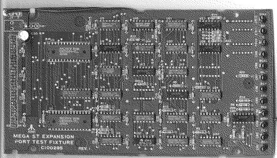

Previous
Next
TOC
F5= Write protected. Überprüfe die Diskette ob schreibgeschützt.
Ansonsten Pin 25 am 1772 ist WP überprüfen ob er auf LOW geht
wenn der Testlauf anfängt, wenn ja Controller (1772) austauschen
ansonsten Laufwerk austauschen.
F6= Read compare error. Die Daten die gelesen werden sind nicht die
selben die geschrieben wurden. Überprüfe Laufwerk, Diskette, 1772
und DMA Controller.
F7= DMA error. Erstmal DMA Controller wechseln wenn das nichts FDRQ
Pin 21 und DRQ Pin 27 am 1772 überprüfen. Bleibt es konstannt auf
HIGH-Pegel drücke den Resetknopf und überprüfe das Signal MR am
1772 Pin 13 ob es auf LOW liegt. Wenn nicht drücke nochmal Reset.
Ist MR okay wechsel den 1772.
F8= DMA count error. MMU wechseln, bringt das nichts siehe F7.
F9=
CRC error. Laufwerk oder Diskette defekt, ansonsten 1772 wechseln.
FA= Record not found. 1772 konnte Sektor nicht lesen. Defektes Lauf-
werk, Diskette oder 1772.
FB= Lost data. Ist DMA Test okay, 1772 defekt.
FC= Side select error. Einseitiges Laufwerk oder Pin 21 am PSG
schaltet nicht um oder Laufwerk defekt.
FD= Drive not ready. Defektes Laufwerk (Motor dreht nicht) oder 1772.
Echtzeituhr Fehlercode:
C0= Keine Uhr gefunden
C1= Fehler beim inkrementieren des Datums/Uhrzeit
Expansionslot Fehlercode: (Platine einstecken!)
Stecke die Expansiontestplatine in den Sockel (MegaST, Falcon030)

weiterblättern
Kapitel Das Test- bzw. Diagnosekit von Atari, Seite 10